Đồ giám cá
Đồ giám là bộ sưu tập 418 loài cá, mỗi loài gắn với một màn cụ thể và một bậc phẩm chất từ 1 tới 5.
Mô tả
- Đồ giám là bộ sưu tập 418 loài cá, mỗi loài gắn với một màn cụ thể và một bậc phẩm chất từ 1 tới 5.
- Phân bố phẩm chất cho thấy thiết kế hình chóp rõ: 220 loài phẩm chất 1, 149 loài phẩm chất 2, 25 loài phẩm chất 3, 19 loài phẩm chất 4 và chỉ 5 loài phẩm chất 5.
- Cá trải từ màn 1 tới màn 754, tức nửa đầu của 1.300 màn, nên đây là mục tiêu sưu tầm cho người chơi trung hạn.
- Một trong ba thành tựu của game gắn trực tiếp với đồ giám.
- Mở khoá một loài mới: Ô trong đồ giám sáng lên
- Xem đồ giám: Người chơi thấy tiến độ sưu tầm
- Hoàn tất thành tựu đồ giám: Thành tựu Collection Gallery hoàn tất
Lưu ý
Ảnh chụp màn hình (2)
Chụp trực tiếp từ game đang chạy: 2026-10-06 · LDPlayer 9 · Android 9 · 1080×1920 · máy ảo PHM110 · v1.4111 (cài từ Google Play ngày 12/09/2026) · tài khoản test JadeGill, đang ở level 4. Bấm ảnh để phóng to, dùng phím ← → để chuyển ảnh.

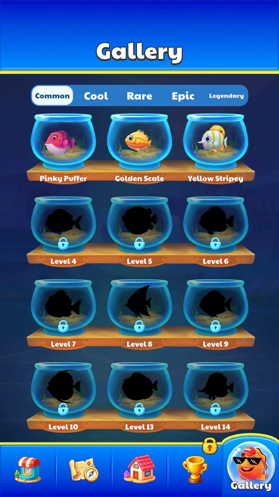

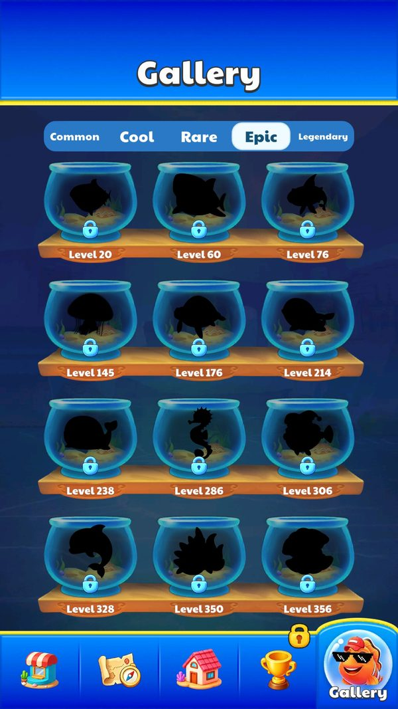
Mở khóa & điểm vào
Có nút riêng ở Home. Mỗi loài mở khi người chơi gặp ở màn tương ứng.
Điểm vào:
- Nút đồ giám ở UIPanelHomeBottom
- Sau khi thu thập được loài mới
Cách hoạt động
- IllustrationConfig là bảng 418 dòng với bốn cột: LevelID là màn mà loài đó xuất hiện, CollectFish là mã loài chạy từ 1 tới 397, khoá dịch tên loài và Quality là bậc phẩm chất.
- Mã loài nhỏ hơn số dòng nghĩa là một số loài xuất hiện lại ở nhiều màn.
- Tên loài viết bằng tiếng Trung trong config và tra sang 14 ngôn ngữ qua LocalizationConfig, ví dụ 小粉豚 là loài đầu tiên ở màn 1 và 航海鱼 là loài cuối ở màn 754.
- UIPanelIllustration hiển thị lưới các ô, ô chưa mở để mờ.
Luồng chi tiết theo code
IllustrationConfig là bảng 418 dòng với bốn cột: LevelID là màn mà loài đó xuất hiện, CollectFish là mã loài chạy từ 1 tới 397, khoá dịch tên loài và Quality là bậc phẩm chất. Mã loài nhỏ hơn số dòng nghĩa là một số loài xuất hiện lại ở nhiều màn. Tên loài viết bằng tiếng Trung trong config và tra sang 14 ngôn ngữ qua LocalizationConfig, ví dụ 小粉豚 là loài đầu tiên ở màn 1 và 航海鱼 là loài cuối ở màn 754. UIPanelIllustration hiển thị lưới các ô, ô chưa mở để mờ.
Số liệu chính
| Chỉ số | Giá trị | Nguồn |
|---|---|---|
| IllustrationConfig | LevelID từ 1 tới 754; CollectFish từ 1 tới 397; Quality 1 có 220 loài, 2 có 149, 3 có 25, 4 có 19, 5 có 5 | AssetRes/Configs/Default/IllustrationConfig.json |
Use case (3)
Bấm vào từng use case để mở. Mở/đóng tất cả
UC-01 Mở khoá một loài mới
Các bước- Tra LevelID trong IllustrationConfig
- Đánh dấu CollectFish đã mở
- Hiện hiệu ứng loài mới
| Actor | Player |
|---|---|
| Trigger | Hoàn tất màn có loài chưa sưu tầm |
| Điều kiện | Màn nằm trong bảng IllustrationConfig |
| Kết quả | Ô trong đồ giám sáng lên |
| Evidence | IllustrationConfig.LevelID; UIPanelIllustration |
UC-02 Xem đồ giám
Các bước- UIPanelIllustration.OnShow
- Dựng lưới 418 ô theo phẩm chất
- Ô chưa mở hiển thị mờ
| Actor | Player |
|---|---|
| Trigger | Bấm nút đồ giám |
| Điều kiện | Không có |
| Kết quả | Người chơi thấy tiến độ sưu tầm |
| Evidence | UIPanelIllustration |
UC-03 Hoàn tất thành tựu đồ giám
Các bước- Cập nhật PlayerData.Achievement mục 2
| Actor | System |
|---|---|
| Trigger | Sưu tầm đủ theo yêu cầu |
| Điều kiện | Thành tựu id 2 chưa đạt |
| Kết quả | Thành tựu Collection Gallery hoàn tất |
| Evidence | AchievementConfig id 2 收藏图鉴; PlayerData.Achievement |
Cấu hình (3)
Gộp mọi nguồn: const trong code, JSON mặc định trong Resources, bảng static, storage key, AB test, cờ server.
| Nguồn | Key | Kiểu | Giá trị | Ý nghĩa | Nơi định nghĩa |
|---|---|---|---|---|---|
| json default | IllustrationConfig | bảng 418 dòng | LevelID từ 1 tới 754; CollectFish từ 1 tới 397; Quality 1 có 220 loài, 2 có 149, 3 có 25, 4 có 19, 5 có 5 | Danh mục loài cá sưu tầm | AssetRes/Configs/Default/IllustrationConfig.json |
| runtime LDPlayer 06/10/2026 | Quality → tab | rule | 1 Common (220), 2 Cool (149), 3 Rare (25), 4 Epic (19), 5 Legendary (5) | Quality là nhóm hiển thị theo độ hiếm | ảnh chụp screenshots/illustration_epic.jpg |
| runtime LDPlayer 06/10/2026 | Ô cá chưa mở | rule | Hiện bóng đen + "Level N" = IllustrationConfig.LevelID | Gallery cũng là bản đồ tiến trình | ảnh chụp screenshots/illustration_common.jpg |
Bảng config gốc trong APK
IllustrationConfig.json – 418 loài (418 dòng)
Mỗi loài gắn cứng với một level. Quality 1–5 khớp năm tab Common, Cool, Rare, Epic, Legendary (đối chiếu bằng ảnh chụp). Ảnh cá là sprite fish_<CollectFish>. AssetRes/Configs/Default/IllustrationConfig.json · 418 dòng.
| LevelID | CollectFish | CollectFishName_Localization | Quality |
|---|---|---|---|
| 1 | 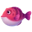 1 | 小粉豚Pinky Puffer | 1 · Common |
| 2 | 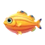 2 | 金鳞仔Golden Scale | 1 · Common |
| 3 | 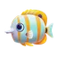 3 | 黄纹宝Yellow Stripey | 1 · Common |
| 4 | 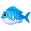 4 | 蓝纹蝶Blue-Stripe Wing | 1 · Common |
| 5 | 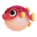 5 | 圆滚滚Rolly Poly | 1 · Common |
| 6 | 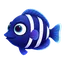 6 | 紫电鱼Volt Fish | 1 · Common |
| 7 | 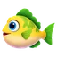 7 | 绿泡泡Green Bubble | 1 · Common |
| 8 | 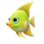 8 | 黄盖仔Yellow Shell-Kid | 1 · Common |
| 9 | 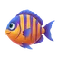 9 | 橙纹宝Orange Stripey | 1 · Common |
| 10 | 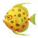 11 | 金斑点Golden Spot | 1 · Common |
| 12 | 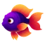 31 | 红尾蝶Red Wing | 3 · Rare |
| 13 | 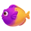 12 | 粉紫灵Violet Sprite | 1 · Common |
| 14 | 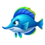 13 | 蓝闪蝶Blue Flash | 1 · Common |
| 15 | 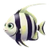 14 | 银线鱼Silver Line | 1 · Common |
| 16 | 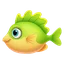 16 | 绿鳍仔Green Finny | 1 · Common |
| 17 | 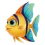 17 | 彩尾蝶Rainbow Wing | 1 · Common |
| 18 | 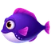 23 | 紫灵鱼Purple Sprite | 1 · Common |
| 19 | 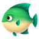 25 | 绿斑宝Green Spotty | 1 · Common |
| 20 | 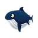 58 | 小鲸宝Whale Tot | 4 · Epic |
| 21 | 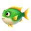 26 | 紫纹兽Purple Beast | 1 · Common |
| 23 | 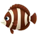 27 | 棕纹条Brown Striper | 1 · Common |
| 24 | 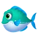 28 | 蓝条鱼Blue Striper | 1 · Common |
| 25 | 132 | 蓝肚豚Bluebelly | 5 · Legendary |
| 27 | 30 | 蓝宝鱼Bluey Fish | 1 · Common |
| 28 | 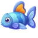 33 | 蓝鳍宝Blue Finny | 1 · Common |
| 29 | 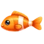 35 | 橙条鱼Orange Striper | 1 · Common |
| 30 | 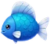 36 | 蓝圆宝Blue Orby | 1 · Common |
| 32 | 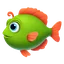 37 | 绿圆宝Green Orby | 1 · Common |
| 33 | 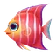 10 | 红纹蝶Red-Stripe Wing | 2 · Cool |
| 35 | 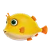 15 | 小黄宝Goldie Tot | 2 · Cool |
| 36 | 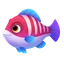 18 | 粉纹鱼Pink Stripey | 2 · Cool |
| 38 | 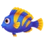 19 | 彩条鱼Rainbow Striper | 2 · Cool |
| 39 | 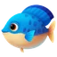 20 | 蓝胖墩Blue Chunker | 2 · Cool |
| 40 | 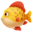 21 | 黄金宝Goldie | 2 · Cool |
| 42 | 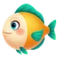 22 | 黄蓝宝Yellow-Bluey | 2 · Cool |
| 43 | 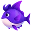 24 | 紫纹蝶Purple-Stripe Wing | 2 · Cool |
| 44 | 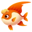 29 | 红焰鱼Flame Fish | 2 · Cool |
| 45 | 32 | 黑白豚Panda Puffer | 2 · Cool |
| 47 | 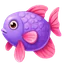 34 | 粉泡泡Pink Bubble | 2 · Cool |
| 48 | 323 | 蓝粉帽Pink-Cap Blue | 3 · Rare |
| 49 | 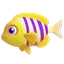 49 | 紫条鱼Purple Striper | 2 · Cool |
| 50 | 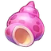 66 | 海螺宝Conchy | 2 · Cool |
| 52 | 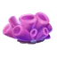 68 | 珊瑚灵Coral Sprite | 2 · Cool |
| 53 | 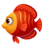 73 | 红焰宝Red Flamie | 2 · Cool |
| 54 | 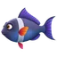 76 | 紫纹蝶Purple-Stripe Wing | 2 · Cool |
| 56 | 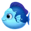 77 | 蓝纹条Bluey Striper | 2 · Cool |
| 57 | 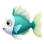 86 | 彩条鱼Rainbow Striper | 2 · Cool |
| 58 | 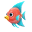 88 | 小红帆Red Sail | 2 · Cool |
| 60 | 133 | 尖牙鲨Fang Shark | 4 · Epic |
| 61 | 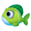 38 | 绿条纹Green Stripey | 1 · Common |
| 62 | 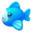 39 | 蓝圆鱼Blue Roundy | 1 · Common |
| 65 | 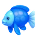 40 | 蓝胖宝Bluey Plump | 1 · Common |
| 66 | 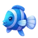 42 | 蓝条宝Blue Stripey | 1 · Common |
| 68 | 43 | 蓝泡泡Blue Bubble | 1 · Common |
| 69 | 44 | 绿圆仔Green Roundy | 1 · Common |
| 70 | 45 | 橙胖宝Orange Plump | 1 · Common |
| 72 | 46 | 粉胖宝Pinky Plump | 1 · Common |
| 73 | 47 | 黄胖墩Yellow Chunker | 1 · Common |
| 74 | 50 | 黄蓝鲨Yellow-Blue Shark | 1 · Common |
| 76 | 59 | 小蓝鲨Little Blue | 4 · Epic |
| 77 | 242 | 金涟豚Goldy Ripple | 1 · Common |
| 78 | 243 | 赤焰鱼Red Flame | 1 · Common |
| 80 | 245 | 蓝白怪Bluey Freak | 1 · Common |
| 81 | 246 | 深海橙Deepsea Orange | 1 · Common |
| 82 | 247 | 暖光斑Glow Spot | 1 · Common |
| 84 | 249 | 金纹鳞Goldy Scale | 1 · Common |
| 85 | 251 | 紫月鳞Purple Moon | 1 · Common |
| 86 | 252 | 紫晶豚Crystal Purple | 1 · Common |
| 88 | 254 | 绯紫怪Purple Freak | 1 · Common |
| 90 | 255 | 橙焰丸Flame Blob | 1 · Common |
| 92 | 41 | 橙胖墩Orange Chunker | 3 · Rare |
| 93 | 89 | 尖嘴蓝Blue Beak | 2 · Cool |
| 94 | 93 | 墨蓝鳍Inky Fin | 2 · Cool |
| 96 | 97 | 粉嘟嘟Pinky Dot | 2 · Cool |
| 98 | 99 | 蓝星鱼Starry Blue | 2 · Cool |
| 100 | 102 | 粉橙宝Peachy Pal | 2 · Cool |
| 101 | 107 | 紫尾蝶Purple Butterfly | 2 · Cool |
| 102 | 109 | 蓝金帆Blue-Gold Sail | 2 · Cool |
| 104 | 111 | 红细条Red Slim-Stripe | 2 · Cool |
| 105 | 112 | 红大鳍Big Red Fin | 2 · Cool |
| 106 | 324 | 木桶宝Barrel Chest | 3 · Rare |
| 108 | 127 | 青鳞仔Cyan Scale | 2 · Cool |
| 109 | 140 | 绿眉鱼Greenbrow | 2 · Cool |
| 110 | 147 | 粉圆球Pinkie Ball | 2 · Cool |
| 112 | 148 | 紫光球Glowy Purple | 2 · Cool |
| 113 | 150 | 火焰鱼Flamefish | 2 · Cool |
| 114 | 151 | 青鳍宝Cyan Finny | 2 · Cool |
| 116 | 154 | 金焰鱼Goldflame Fish | 2 · Cool |
| 117 | 156 | 金纹鱼Gold-Striped Fish | 2 · Cool |
| 118 | 162 | 蓝红鳍Blue-Red Fin | 2 · Cool |
| 120 | 164 | 蓝金脊Blue-Gold Ridge | 2 · Cool |
| 121 | 51 | 彩尾鱼Rainbow Tail | 3 · Rare |
| 122 | 54 | 蓝鳍鱼Blue-Fin Fish | 1 · Common |
| 124 | 60 | 绿胖宝Greeny Plump | 1 · Common |
| 126 | 61 | 蓝条鲨Blue-Stripe Shark | 1 · Common |
| 128 | 71 | 蓝白鱼Blue-White Fish | 1 · Common |
| 130 | 72 | 绿纹鱼Green Stripe Fish | 1 · Common |
| 132 | 74 | 深蓝宝Deep Bluey | 1 · Common |
| 133 | 75 | 赤金斑Red-Gold Dot | 1 · Common |
| 134 | 78 | 紫圆宝Purple Roundie | 1 · Common |
| 136 | 79 | 蓝剑鱼Blue Swordfish | 1 · Common |
| 137 | 80 | 银条鱼Silverside | 1 · Common |
| 138 | 81 | 蓝胖鱼Blue Chubby | 1 · Common |
| 140 | 82 | 银头鱼Silvertop | 1 · Common |
| 141 | 83 | 紫胖宝Purple Chubby | 1 · Common |
| 142 | 84 | 紫尾鱼Purpletail | 1 · Common |
| 144 | 85 | 蓝胖鲨Blue Chubby Shark | 1 · Common |
| 145 | 57 | 水母灵Jelly Sprite | 4 · Epic |
| 146 | 87 | 黄嘴鱼Yellow Beak | 1 · Common |
| 148 | 90 | 绿顶仙Green Crest | 1 · Common |
| 150 | 91 | 青纹斑Cyan Spot | 1 · Common |
| 152 | 92 | 翠尾蝶Emerald Wing | 1 · Common |
| 153 | 94 | 青鳞宝Cyany Scale | 1 · Common |
| 154 | 95 | 圆绿仔Round Greeny | 1 · Common |
| 156 | 96 | 绿纹豚Green Stripe Puffer | 1 · Common |
| 157 | 98 | 紫纹鳞Purple Scale | 1 · Common |
| 158 | 100 | 深紫胖Purple Chub | 1 · Common |
| 160 | 101 | 紫纹条Purple Stripey | 1 · Common |
| 161 | 167 | 蓝白纹Blue-White Stripes | 2 · Cool |
| 162 | 168 | 金蓝纹Gold-Blue Stripes | 2 · Cool |
| 164 | 171 | 蓝金鳍Blue-Gold Fin | 2 · Cool |
| 165 | 173 | 红白纹Red-White Stripes | 2 · Cool |
| 166 | 174 | 金红纹Gold-Red Stripes | 2 · Cool |
| 168 | 175 | 金红鳍Gold-Red Fin | 2 · Cool |
| 169 | 177 | 橙金鳍Gold-Fin Orange | 2 · Cool |
| 170 | 179 | 金红宝Ruby Gold | 2 · Cool |
| 172 | 180 | 红纹宝Red Stripey | 2 · Cool |
| 173 | 181 | 蓝金鳍Blue-Gold Fin | 2 · Cool |
| 174 | 52 | 粉鳍鱼Pinky Fin | 3 · Rare |
| 176 | 67 | 绿龟宝Green Turtie | 4 · Epic |
| 177 | 103 | 紫白条Viowhite Stripey | 1 · Common |
| 178 | 104 | 粉圆宝Pink Orball | 1 · Common |
| 180 | 105 | 紫圆胖Purple Roundy | 1 · Common |
| 182 | 106 | 紫白纹Viowhite Striper | 1 · Common |
| 184 | 108 | 红灯泡Red Bulb | 1 · Common |
| 185 | 110 | 绿皮球Green Ball | 1 · Common |
| 186 | 113 | 粉红纹Pink Stripes | 1 · Common |
| 188 | 114 | 玫红胖Rosy Chub | 1 · Common |
| 190 | 115 | 红白条Red-White Stripey | 1 · Common |
| 192 | 116 | 粉红鳍Peachy Fin | 1 · Common |
| 194 | 389 | 木乃伊Mummy | 3 · Rare |
| 196 | 118 | 橙圆仔Orange Orby | 1 · Common |
| 198 | 119 | 小黄灵Sunny Sprite | 1 · Common |
| 200 | 120 | 黄纹蝶Yellow-Stripe Wing | 1 · Common |
| 202 | 121 | 黄睡宝Sleepy Yellow | 1 · Common |
| 204 | 122 | 樱粉鱼Cherry Pink | 1 · Common |
| 206 | 123 | 黄黑条Yellow-Black Striper | 1 · Common |
| 208 | 124 | 棕纹胖Brown Stripey | 1 · Common |
| 210 | 125 | 金蓝顶Gold-Blue Cap | 1 · Common |
| 212 | 128 | 绿纹胖Green Stripey Chub | 1 · Common |
| 214 | 129 | 蓝白鲸Blue-White Whale | 4 · Epic |
| 216 | 183 | 金蓝鳍Gold-Blue Fin | 2 · Cool |
| 218 | 184 | 棕白纹Brown-White Stripe | 2 · Cool |
| 220 | 185 | 红蓝纹Red-Blue Stripe | 2 · Cool |
| 222 | 70 | 彩泡泡Rainbow Bubble | 5 · Legendary |
| 224 | 188 | 蓝红鳍Blue-Red Fin | 2 · Cool |
| 226 | 189 | 黄黑纹Yellow-Black | 2 · Cool |
| 228 | 194 | 红蓝豚Red-Blue Puffer | 2 · Cool |
| 230 | 195 | 玫红丸Rose Pearl | 2 · Cool |
| 232 | 197 | 橙小胖Chubby Tangerine | 2 · Cool |
| 234 | 198 | 彩虹鱼Rainbow Fish | 2 · Cool |
| 236 | 220 | 渐变紫Purple Fade | 2 · Cool |
| 238 | 130 | 圆胖鲸Chubby Whale | 4 · Epic |
| 240 | 136 | 棕背鱼Brownback | 1 · Common |
| 242 | 137 | 蓝圆鳍Blue Roundfin | 1 · Common |
| 244 | 138 | 绿橙宝Green-Orange Tot | 1 · Common |
| 246 | 139 | 蓝脸鲨Blueface Shark | 1 · Common |
| 248 | 141 | 红胖鱼Red Chubby | 1 · Common |
| 250 | 142 | 青纹宝Cyan Stripey | 1 · Common |
| 252 | 143 | 蓝白鲨Blue-White Shark | 1 · Common |
| 254 | 144 | 蓝纹宝Bluey Stripey | 1 · Common |
| 257 | 145 | 红纹鲨Red-Striped Shark | 1 · Common |
| 258 | 146 | 蓝圆宝Blue Orby | 1 · Common |
| 260 | 53 | 海星宝Starry | 3 · Rare |
| 262 | 55 | 八爪仔Octo-Kid | 3 · Rare |
| 264 | 183 | 金蓝鳍Gold-Blue Fin | 2 · Cool |
| 266 | 184 | 棕白纹Brown-White Stripe | 2 · Cool |
| 268 | 185 | 红蓝纹Red-Blue Stripe | 2 · Cool |
| 270 | 363 | 宝冠鱼Crownfish | 2 · Cool |
| 272 | 367 | 白发鱼Silver Strand | 2 · Cool |
| 274 | 368 | 紫琉鱼Amethyst Glaze | 2 · Cool |
| 276 | 369 | 胭紫绯Magenta Tang | 2 · Cool |
| 278 | 371 | 碧瑶鳞Jade Scale | 2 · Cool |
| 280 | 372 | 翠紫琉Emerald Violet | 2 · Cool |
| 282 | 373 | 赤盔鱼Scarlet Helmet | 2 · Cool |
| 284 | 226 | 紫影鱼Purple Shadow | 2 · Cool |
| 286 | 134 | 紫海马Purple Seahorse | 4 · Epic |
| 288 | 149 | 青宝石Cyan Gem | 1 · Common |
| 290 | 152 | 青圆鱼Cyan Roundie | 1 · Common |
| 292 | 153 | 橙红宝Orange Ruby | 1 · Common |
| 294 | 155 | 红纹宝Red Stripey | 1 · Common |
| 296 | 157 | 金圆宝Gold Roundie | 1 · Common |
| 298 | 158 | 红金鳍Golden Red | 1 · Common |
| 300 | 160 | 蓝纹胖Blue Stripey Chub | 1 · Common |
| 302 | 161 | 蓝金宝Blue-Gold Babe | 1 · Common |
| 304 | 163 | 蓝金胖Blue-Gold Chub | 1 · Common |
| 306 | 395 | 小丑鱼Clownfish | 4 · Epic |
| 308 | 166 | 青金斑Cyan-Gold Spot | 1 · Common |
| 310 | 169 | 蓝白宝Blue-White Babe | 1 · Common |
| 312 | 170 | 蓝白鱼Blue-White Fish | 1 · Common |
| 314 | 172 | 蓝金纹Blue-Gold Stripes | 1 · Common |
| 316 | 176 | 红金纹Red-Gold Stripe | 1 · Common |
| 318 | 178 | 粉红鳍Peachy Fin | 1 · Common |
| 320 | 186 | 橙棕鱼Orange Brown | 1 · Common |
| 322 | 187 | 橙黑纹Orange-Black | 1 · Common |
| 324 | 190 | 青白鱼Lime-White | 1 · Common |
| 326 | 191 | 红蓝鳍Red-Blue Finny | 1 · Common |
| 328 | 135 | 粉吻豚Pink Kisser | 4 · Epic |
| 330 | 227 | 浅汐鳞Pale Tide | 2 · Cool |
| 332 | 228 | 紫涟纹Violet Ripple | 2 · Cool |
| 334 | 239 | 金汐鱼Golden Tide | 2 · Cool |
| 336 | 244 | 云澜鳞Cloud Scale | 2 · Cool |
| 338 | 248 | 灯笼焰Lantern Flame | 2 · Cool |
| 340 | 250 | 赤心波Heart Wave | 2 · Cool |
| 342 | 253 | 紫幽波Ghostly Wave | 2 · Cool |
| 344 | 263 | 绿虹波Green Iris | 2 · Cool |
| 346 | 265 | 蓝霓汐Neon Tide | 2 · Cool |
| 348 | 267 | 紫虹涟Rainbow Ripple | 2 · Cool |
| 350 | 310 | 蓝珊瑚Blue Coral | 4 · Epic |
| 352 | 56 | 海马宝Seahorse Pal | 3 · Rare |
| 354 | 62 | 寄居蟹Hermit Crab | 3 · Rare |
| 356 | 311 | 粉珍珠Pink Pearl | 4 · Epic |
| 358 | 149 | 青宝石Cyan Gem | 1 · Common |
| 361 | 152 | 青圆鱼Cyan Roundie | 1 · Common |
| 362 | 153 | 橙红宝Orange Ruby | 1 · Common |
| 364 | 155 | 红纹宝Red Stripey | 1 · Common |
| 366 | 157 | 金圆宝Gold Roundie | 1 · Common |
| 368 | 158 | 红金鳍Golden Red | 1 · Common |
| 370 | 160 | 蓝纹胖Blue Stripey Chub | 1 · Common |
| 372 | 161 | 蓝金宝Blue-Gold Babe | 1 · Common |
| 374 | 163 | 蓝金胖Blue-Gold Chub | 1 · Common |
| 376 | 165 | 蓝圆鳍Blue Roundfin | 1 · Common |
| 378 | 166 | 青金斑Cyan-Gold Spot | 1 · Common |
| 380 | 169 | 蓝白宝Blue-White Babe | 1 · Common |
| 382 | 170 | 蓝白鱼Blue-White Fish | 1 · Common |
| 384 | 172 | 蓝金纹Blue-Gold Stripes | 1 · Common |
| 386 | 176 | 红金纹Red-Gold Stripe | 1 · Common |
| 388 | 178 | 粉红鳍Peachy Fin | 1 · Common |
| 390 | 186 | 橙棕鱼Orange Brown | 1 · Common |
| 392 | 187 | 橙黑纹Orange-Black | 1 · Common |
| 394 | 190 | 青白鱼Lime-White | 1 · Common |
| 396 | 191 | 红蓝鳍Red-Blue Finny | 1 · Common |
| 398 | 69 | 潜水艇Submarine | 5 · Legendary |
| 400 | 387 | 翡翠鱼Jade Fish | 2 · Cool |
| 402 | 374 | 胭绯朵Blush Petal-Fish | 2 · Cool |
| 404 | 377 | 青碧绯Cyan Tang | 2 · Cool |
| 406 | 378 | 玫冠鱼Rose Crownfish | 2 · Cool |
| 408 | 379 | 探险鱼Explorer Fish | 2 · Cool |
| 410 | 381 | 紫冠鱼Purple Crownfish | 2 · Cool |
| 412 | 382 | 翠卷蓝Emerald Blue | 2 · Cool |
| 414 | 383 | 蓝须鱼Blue Whisker | 2 · Cool |
| 416 | 384 | 赤胭斑Ruby Spots | 2 · Cool |
| 418 | 388 | 橙宝鱼Amber Tang | 2 · Cool |
| 420 | 268 | 绯云汐Crimson Tide | 2 · Cool |
| 422 | 269 | 焰橙岚Flame Mist | 2 · Cool |
| 424 | 273 | 幻紫澜Mystic Purple | 2 · Cool |
| 426 | 274 | 粉霓角Neon Pinky | 2 · Cool |
| 428 | 278 | 金紫涟Gold-Purple Wave | 2 · Cool |
| 430 | 280 | 虹彩汐Rainbow Tide | 2 · Cool |
| 432 | 283 | 青柠晴Limey Sky | 2 · Cool |
| 434 | 288 | 浅蓝角Azure Hornfish | 2 · Cool |
| 436 | 290 | 灯笼紫Purple Angler | 2 · Cool |
| 438 | 291 | 粉紫丸Plum Guppy | 2 · Cool |
| 440 | 312 | 白珍珠White Pearl | 4 · Epic |
| 442 | 63 | 红钳蟹Red Pincer | 3 · Rare |
| 444 | 64 | 红壳蟹Red-Shell Crab | 3 · Rare |
| 446 | 192 | 青泡泡Lime Bubble | 1 · Common |
| 448 | 193 | 冰蓝丸Ice Blue Pearl | 1 · Common |
| 450 | 196 | 橙鳍鱼Orange Fin | 1 · Common |
| 452 | 199 | 青柠鱼Lime Fish | 1 · Common |
| 454 | 200 | 黄蓝仔Yellow-Blue Boy | 1 · Common |
| 456 | 201 | 红泡泡Red Bubble | 1 · Common |
| 458 | 202 | 红紫丸Plum Pearl | 1 · Common |
| 460 | 203 | 小黄豚Goldy Puffer | 1 · Common |
| 462 | 205 | 冰蓝豚Ice Puffer | 1 · Common |
| 464 | 206 | 天蓝蓝Sky Blue | 1 · Common |
| 466 | 207 | 海蓝丸Ocean Pearl | 1 · Common |
| 468 | 208 | 橘小胖Chubby Orange | 1 · Common |
| 470 | 209 | 蓝点点Blue Dots | 1 · Common |
| 472 | 210 | 花斑鱼Speckled Fish | 1 · Common |
| 474 | 211 | 冰纹丸Ice Marble | 1 · Common |
| 476 | 212 | 橙焰鱼Orange Flame | 1 · Common |
| 478 | 213 | 深海蓝Deep Sea Blue | 1 · Common |
| 480 | 214 | 天蓝豚Sky Puffer | 1 · Common |
| 482 | 215 | 灯笼怪Angler Monster | 1 · Common |
| 484 | 216 | 紫斑鱼Purple Spot | 1 · Common |
| 486 | 182 | 蓝白纹Blue-White Stripes | 3 · Rare |
| 488 | 204 | 紫灯笼Purple Lantern | 3 · Rare |
| 490 | 292 | 金泡泡Gold Bubble | 2 · Cool |
| 492 | 298 | 青柠豚Lime Puffer | 2 · Cool |
| 494 | 299 | 黄蓝丸Yellow-Blue Guppy | 2 · Cool |
| 496 | 309 | 黄蓝豚Yellow-Blue Puffer | 2 · Cool |
| 498 | 327 | 冰鳍鱼Icefin Fish | 2 · Cool |
| 500 | 330 | 蓝晶鱼Crystal Blue | 2 · Cool |
| 502 | 332 | 橙紫豚Sunset Puffer | 2 · Cool |
| 504 | 333 | 冰蓝鱼Ice-Blue Fish | 2 · Cool |
| 506 | 335 | 彩紫鱼Vibrant Violet | 2 · Cool |
| 508 | 342 | 金纹斑Golden Streak | 2 · Cool |
| 510 | 345 | 紫尾煌Violet Emperor | 2 · Cool |
| 512 | 347 | 红须仙Red-Whiskered Angel | 2 · Cool |
| 514 | 348 | 绯霞鱼Crimson Sunset | 2 · Cool |
| 516 | 349 | 黄角鱼Yellow Hornfish | 2 · Cool |
| 518 | 351 | 沧蓝丸Abyss Tetra | 2 · Cool |
| 520 | 352 | 赤须彤Scarlet Barb | 2 · Cool |
| 522 | 353 | 琉蓝尾Glaze Blue-Tail | 2 · Cool |
| 524 | 355 | 翠冠金Golden Emerald | 2 · Cool |
| 526 | 358 | 桃绯鱼Peach Anthias | 2 · Cool |
| 528 | 362 | 独角鱼Unifish | 2 · Cool |
| 530 | 65 | 斑点鱿Spotty Squid | 3 · Rare |
| 532 | 159 | 紫蓝鳍Purp-Blue Fin | 3 · Rare |
| 534 | 217 | 橙条纹Orange Stripes | 1 · Common |
| 536 | 218 | 金橙仔Golden Orange | 1 · Common |
| 538 | 219 | 橘泡泡Orange Pop | 1 · Common |
| 540 | 221 | 深紫仔Purple Pup | 1 · Common |
| 542 | 222 | 浅绿豚Minty Puffer | 1 · Common |
| 544 | 223 | 深绿豚Dark Green Fin | 1 · Common |
| 546 | 224 | 黄绿豚Limey Puffer | 1 · Common |
| 548 | 225 | 小蓝豚Bluey Puffer | 1 · Common |
| 550 | 229 | 橙汐波Orange Wave | 1 · Common |
| 552 | 230 | 海蓝豚Seablue Puffer | 1 · Common |
| 554 | 231 | 赤焰鳞Flame Scale | 1 · Common |
| 556 | 232 | 暖汐鱼Sunny Tide | 1 · Common |
| 558 | 233 | 冰澜纹Ice Wave | 1 · Common |
| 560 | 234 | 云涟豚Cloud Fin | 1 · Common |
| 562 | 235 | 金鳞汐Goldscale Tide | 1 · Common |
| 564 | 236 | 焰波鱼Flame Wave | 1 · Common |
| 566 | 237 | 星海鳞Starry Scale | 1 · Common |
| 568 | 238 | 赤虹豚Red Iris Puffer | 1 · Common |
| 570 | 240 | 青岚鳞Teal Mist | 1 · Common |
| 573 | 241 | 橙光斑Orange Spot | 1 · Common |
| 574 | 131 | 绿海马Green Seahorse | 5 · Legendary |
| 576 | 363 | 宝冠鱼Crownfish | 2 · Cool |
| 578 | 367 | 白发鱼Silver Strand | 2 · Cool |
| 580 | 368 | 紫琉鱼Amethyst Glaze | 2 · Cool |
| 582 | 369 | 胭紫绯Magenta Tang | 2 · Cool |
| 585 | 371 | 碧瑶鳞Jade Scale | 2 · Cool |
| 586 | 372 | 翠紫琉Emerald Violet | 2 · Cool |
| 588 | 373 | 赤盔鱼Scarlet Helmet | 2 · Cool |
| 590 | 374 | 胭绯朵Blush Petal-Fish | 2 · Cool |
| 593 | 325 | 漂流瓶Message in a Bottle | 4 · Epic |
| 594 | 318 | 绿草簇Grass Tuft | 3 · Rare |
| 597 | 322 | 金船锚Golden Anchor | 3 · Rare |
| 598 | 256 | 金暖阳Golden Sun | 1 · Common |
| 601 | 257 | 赤须波Whisker Wave | 1 · Common |
| 602 | 258 | 紫柔鳞Purple Soft | 1 · Common |
| 605 | 259 | 黄鳍波Yellowfin Wave | 1 · Common |
| 606 | 260 | 彩尾鳞Rainbow Scale | 1 · Common |
| 608 | 261 | 浪蓝豚Wavey Blue | 1 · Common |
| 610 | 391 | 红钳蟹Red Pincer | 4 · Epic |
| 612 | 48 | 蓝纹鲨Blue Wave Shark | 2 · Cool |
| 614 | 126 | 橙纹宝Orange Stripey | 2 · Cool |
| 617 | 340 | 紫雾豚Mist Puffer | 2 · Cool |
| 618 | 341 | 碧海鳞Aquamarine Scale | 2 · Cool |
| 620 | 343 | 青琉鱼Teal Glaze | 2 · Cool |
| 622 | 344 | 彩蓝丸Rainbow Guppy | 2 · Cool |
| 624 | 346 | 赤绒鳞Crimson Velvet | 2 · Cool |
| 626 | 321 | 潜水盔Diving Helmet | 5 · Legendary |
| 628 | 262 | 独角鱼Unifish | 1 · Common |
| 630 | 264 | 蓝团团Blue Blob | 1 · Common |
| 632 | 266 | 浅澜晴Sky Fin | 1 · Common |
| 634 | 270 | 沧青涟Teal Ripple | 1 · Common |
| 636 | 271 | 深紫晴Deep Purple | 1 · Common |
| 638 | 313 | 紫珊瑚Purple Coral | 3 · Rare |
| 641 | 350 | 斑赤瑶Scarlet Ray | 2 · Cool |
| 642 | 354 | 绯纹鱼Scarlet Stripe | 2 · Cool |
| 645 | 356 | 紫霞鱼Purple Sunset | 2 · Cool |
| 646 | 357 | 翠琉丸Jade Tetra | 2 · Cool |
| 648 | 359 | 罗兰斑Orchid Anthias | 2 · Cool |
| 650 | 314 | 海螺Conch | 3 · Rare |
| 653 | 272 | 海蓝汐Seablue Tide | 1 · Common |
| 654 | 275 | 青虹晴Teal Iris | 1 · Common |
| 657 | 276 | 焰橙汐Flame Tide | 1 · Common |
| 658 | 277 | 蓝橙岚Blue Ember | 1 · Common |
| 660 | 279 | 赤焰晴Crimson Sunshine | 1 · Common |
| 662 | 315 | 粉晶簇Pink Crystal | 3 · Rare |
| 664 | 282 | 彩岚汐Iris Tide | 1 · Common |
| 666 | 284 | 橙焰涟Flame Ripple | 1 · Common |
| 668 | 285 | 翠虹晴Jade Rainbow | 1 · Common |
| 670 | 286 | 青绿涟Aqua Ripple | 1 · Common |
| 674 | 392 | 酋长鱼Chieftain Fish | 4 · Epic |
| 676 | 281 | 粉桃鱼Peach Fin | 1 · Common |
| 678 | 287 | 蓝紫汐Blue Twilight | 1 · Common |
| 682 | 289 | 蓝兜兜Blue Bonnet | 1 · Common |
| 685 | 293 | 浅蓝丸Cyan Tetra | 1 · Common |
| 686 | 316 | 紫管花Purple Pipewort | 3 · Rare |
| 688 | 294 | 金点点Gold Dot | 1 · Common |
| 690 | 295 | 紫蓝豚Indigo Puffer | 1 · Common |
| 692 | 296 | 红焰丸Flame Guppy | 1 · Common |
| 694 | 317 | 珊瑚怪Coral Monster | 3 · Rare |
| 698 | 297 | 玫粉鱼Rosy Pink Fish | 1 · Common |
| 700 | 300 | 彩糖鱼Candy Swirl | 1 · Common |
| 702 | 301 | 紫晶豚Crystal Purple | 1 · Common |
| 704 | 302 | 天蓝鱼Sky Blue Fish | 1 · Common |
| 706 | 303 | 天蓝丸Sky Skipper | 1 · Common |
| 708 | 304 | 橙焰豚Flame Puffer | 1 · Common |
| 710 | 305 | 大嘴豚Bigmouth Puffer | 1 · Common |
| 712 | 306 | 橙条宝Orange Stripe | 1 · Common |
| 714 | 307 | 金鳍丸Goldfin | 1 · Common |
| 716 | 308 | 红火鱼Fiery Red Fish | 1 · Common |
| 718 | 319 | 红珊瑚Red Coral | 3 · Rare |
| 720 | 360 | 赤斑鱼Crimson Spot | 2 · Cool |
| 722 | 361 | 焰圆鳞Flame Scaly | 2 · Cool |
| 724 | 364 | 暖橙丸Sunny Amber | 2 · Cool |
| 726 | 365 | 朱霞须Rosy Whisker | 2 · Cool |
| 728 | 366 | 丹绒鱼Tanjung Fish | 2 · Cool |
| 730 | 239 | 金汐鱼Golden Tide | 4 · Epic |
| 732 | 117 | 暗红宝Ruby Baby | 1 · Common |
| 734 | 165 | 蓝圆鳍Blue Roundfin | 1 · Common |
| 736 | 328 | 浅蓝豚Aqua Puffer | 1 · Common |
| 738 | 329 | 红背豚Redback Puffer | 1 · Common |
| 740 | 331 | 红条背Red Striper | 1 · Common |
| 742 | 396 | 魔术师Magician | 4 · Epic |
| 744 | 370 | 蜜橙斑Citrus Spotty | 2 · Cool |
| 746 | 375 | 蜜橘鱼Tangerine Fish | 2 · Cool |
| 748 | 376 | 焰尾橙Flame Tail | 2 · Cool |
| 750 | 380 | 金珀鱼Golden Amber | 2 · Cool |
| 752 | 385 | 青瑙鱼Blue Agate Fish | 2 · Cool |
| 754 | 397 | 航海鱼Sailor Fish | 4 · Epic |
Số liệu đo trên máy
Đối chiếu tab ↔ Quality
| Tab | Quality | Số loài |
|---|---|---|
| Common | 1 | 220 |
| Cool | 2 | 149 |
| Rare | 3 | 25 |
| Epic | 4 | 19 |
| Legendary | 5 | 5 |
Giao diện (UI)
| Element | Class | Mục đích |
|---|---|---|
| Đồ giám | UIPanelIllustration | Lưới các loài đã và chưa sưu tầm |
Chưa đọc được / ghi chú
- Không tìm thấy khoá PlayerPrefs riêng lưu danh sách loài đã mở; nhiều khả năng suy ra từ level hiện tại vì mỗi loài gắn cứng với một màn
- Quality chỉ thấy dùng để chia 5 tab hiển thị; chưa thấy ảnh hưởng tới gameplay
Tính năng liên quan
Nguồn đã đọc
- AssetRes/Configs/Default/IllustrationConfig.json
- features/UIPanelIllustration.md
- feature_extras.json
- screenshots/
- facts/runtime/decoded/playerprefs_2026-10-06.json